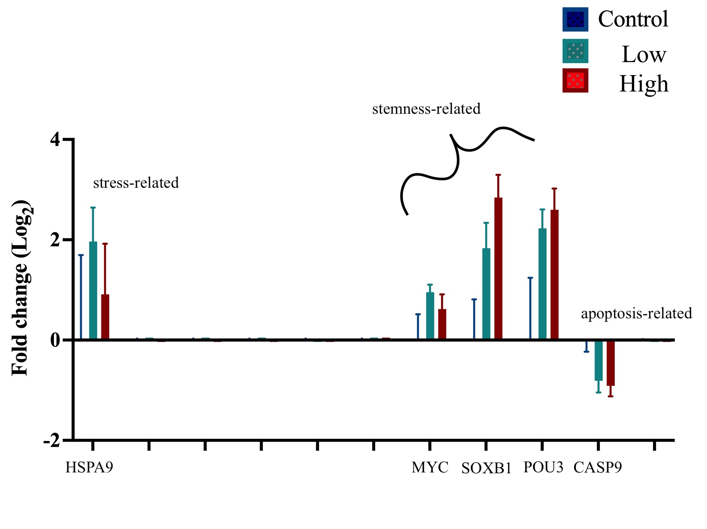

This page is intended to act as a living document recording the progression of my thesis work.
Thesis Comittee Memebers
Co-Supervisory Committee Chair - Dr. Alison Gardell, agardell@uw.edu
Co-Supervisory Committee Chair - Dr. Steven B Roberts, sr320@uw.edu
Committee UW SAFS Core Faculty - Dr. Jacqueline Padilla-Gamiño, jpgamino@uw.edu
Graduate Student, (Master’s Thesis) - Celeste Valdivia, cvaldi@uw.edu
Masters Milestone Progress
| Milestone | Expected | Completed |
|---|---|---|
| Form Committee | [AU23] 08DEC23 | [SU23] 29AUG23 |
| Submit Plan of Study | [AU23] 08DEC23 | |
| Submit Thesis Proposal | [AU22] 08DEC23 | |
| End-of-Program Meeting with GPA | [AU23] TBD | |
| Submit Thesis Draft | [WI24] TBD | |
| Request Final Exam | [WI24] TBD | |
| Request Master’s Degree | [WI24] TBD | |
| Final Exam: Thesis Seminar + Oral Exam | [SP24] TBD | |
| Submit Master’s Thesis | [SP24] TBD | |
| Commencement |
Plan of Study
Completed Coursework
| Qtr | Course | Credits | Grade |
|---|---|---|---|
| AU22 | FISH 522-Hot Topics in AFS | 2.0 | CR |
| AU22 | FISH 552-Intro R Programming | 2.0 | CR |
| AU22 | FISH 553-Advanced R Programming | 2.0 | CR |
| AU22 | QSCI 482-Statistical Inference in Ecol | 5.0 | 4.0 |
| WI23 | FISH 521-Research Proposal Writing | 4.0 | 4.0 |
| WI23 | FISH 700-Masters Thesis | 3.0 | CR |
| WI23 | FISH 549-Best Practices in Env Data Science | 3.0 | CR |
| WI23 | FISH 700-Masters Thesis | 5.0 | CR |
| WI23 | C ENV 555-Teaching Best Practices Env | 1.0 | CR |
| SP23 | FISH 546-Bioinformatics for Env Sciences | 3.0 | 4.0 |
| SP23 | FISH 600-Independent Study: Journal Club | 2.0 | 4.0 |
| SP23 | FISH 700-Masters Thesis | 7.0 | CR |
| SU23 | FISH 700-Masters Thesis | 2.0 | CR |
Planned Coursework
The following coursework represents the completion of the required coursework according to the SAFS Grad Handbook: version 2022-2023.
| Qtr | Course | Credits | Grade Type |
|---|---|---|---|
| AU23 | FISH 423-Aquatic Invasion Ecology | 4.0 | standard |
| AU23 | FISH 700-Masters Thesis | 4.0 | C/NC |
| AU23 | FISH 510-Current Topics in Genetics and Physio | 2.0 | C/NC |
Research Work Overview
Background and Rationale
Botryllus schlosseri is a cosmopolitan, sessile, colonial species currently found in the shallow, temperate, coastal areas of all continents except Antarctica (Zwahlen et al. 2022). Each mature colony of B. schlosseri is composed of genetically identical modules, termed zooids, that are embedded in a gelatinous tunic and share a single vasculature system (Manni et al. 2019). B. schlosseri colonies begin life as free-swimming larva that then settle and metamorphoses into a single founding oozooid. Through blastogenesis, new blastozooids develop and are eventually organized into a colonial star-shaped system. Over the course of its life, a healthy B. schlosseri colony will continue through a weekly blastogenic cycle where entire generations of zooids are synchronously reabsorbed and replaced with new sets of blastozooids (Ricci et al. 2016; Manni et al. 2019). This species of Botryllus is of significant interest as an experimental model organism because of its life cycle, close phylogenetic relation to vertebrates, genomic data availability (Voskoboynik et al.2013), and ability to split systems into ramets that then may serve as genetic replicates in controlled experimental designs.
Previous research work exploring B. schlosseri cell line development have isolated primary cell cultures from the epithelial and blood tissue of lab-reared colonies (Rinkevich and Rabinowitz 1993, 1997; Rabinowitz and Rinkevich 2004a, 2011; Rabinowitz et al. 2009). However, all attempted primary cultures of B. schlosseri hit a state of cellular quiescence where cells stop dividing approximately 24 to 72 hours post-isolation due to a lack of proper nutrients and growth factors; ultimately leading to a loss of cell viability after 4 weeks in vitro (Rinkevich and Rabinowitz 1993; Rabinowitz and Rinkevich 2011; Terzi et al. 2016; Domart-Coulon and Blanchoud 2022). Given such limited life span and proliferative capabilities, there is a clear need to elucidate the ideal culturing conditions for primary cultures of this species prior to experimentally invoking mechanisms of stress-induced evolution.
Objectives and Research Questions
The overarching goal of my masters thesis work is to identify changes in gene expression in isolated tissue of Botryllus schlosseri across the transition from in vivo to in vitro.
Objective 1: Optimize primary culturing methodology for somatic tissues derived from Botryllus schlosseri.
- Do certain cell culture substrates and or media formulations improve cellular proliferation?
- How does the source of the excised tissue, (ampullae versus primary bud versus adult zooid) impact proliferation?
- Does the blastogenic stage of the animal effect monolayer output across these three tissue types?
 Figure 1. Highlighted in cyan are the extending ampullae of a mature Botryllus schlosseri, these organs are only available and visible when the animal is in optimum health. Previous studies have demonstrated the regenerative capacity of ampullae, removing the entirety of the zooid, primary buds, and secondary buds bodies but leaving the extending ampullae intact result in an ability for the whole system to regenerate. Highlighted in white are is a parental zooid, all zooids embedded in the tunic are clonal. Highlighted in yellow is a primary bud adhered to a parental zooid. Primary buds are the next generation of parental zooids that will finish developing and reach maturity within a week.
Figure 1. Highlighted in cyan are the extending ampullae of a mature Botryllus schlosseri, these organs are only available and visible when the animal is in optimum health. Previous studies have demonstrated the regenerative capacity of ampullae, removing the entirety of the zooid, primary buds, and secondary buds bodies but leaving the extending ampullae intact result in an ability for the whole system to regenerate. Highlighted in white are is a parental zooid, all zooids embedded in the tunic are clonal. Highlighted in yellow is a primary bud adhered to a parental zooid. Primary buds are the next generation of parental zooids that will finish developing and reach maturity within a week.
Objective 2: Conduct in vivo and in vitro sublethal nickel chloride exposures on epithelial tissue of Botryllus schlosseri aiming to produce random clastogenic events that may promote cell division in vitro.
- Does a sublethal in vivo exposure to the clastogenic compound nickel chloride promote proliferation of tissue excised post-exposure?
- How does an in vivo exposure to nickel chloride differ to an in vitro challenge effect transcriptional gene expression?
Approach
Mock up of anticipated results
Objective 1
Objective 2
H0: No difference in gene expression of stemness-related, apoptosis-related, and stress-related genes between control and various doses of nickel chloride in primary cultures of Botryllus seeded post exposure.
H1: Exposure to nickel chloride will interrupt apoptosis pathways and promote stemness-related characteristics in exposed cell populations physiologically similar to malignant cancer cells.
